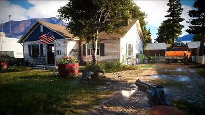
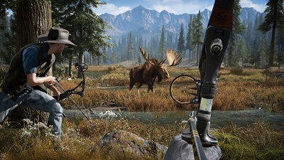

RESEÑA - FAR CRY 5
Sin duda, una de las cosas que se podría desprender a la hora de hablar de la franquicia de Far Cry eso es el cine de acción de los noventas, en el que no se trataba tanto de que el argumento fuera realmente contundente, que el guión y los momentos emotivos no fueran trascendentales y llenos de simbolismos, sino que la acción estuviera presente, que los malos fueran muy malos y que no faltara las explosiones por aquí y por allá. Pues si conocen la franquicia de Ubisoft, podrán darse cuenta de que en efecto, todo esto es lo que vivimos en estos juegos, y más aún en su quinta y última entrega. Far Cry 5 no sólo busca hacer más grande la propuesta, sino que ayuda a darle más profundidad a la fórmula y refina elementos que ya estaban causando algo de cansancio en las entregas anteriores haciendo de Far Cry 5 toda una propuesta redonda.
En este juego tomaremos el control de un ayudante de alguacil que se ve atrapado en una guerra entre el departamento de policía y Joseph, el popular líder de un culto religioso llamado Eden’s Gate en el condado Hope. Joseph, como buen mesías carismático y algo siniestro, escucha la voz de una entidad espiritual que le instruye rescatar a su pueblo del colapso, salva almas es su misión, ya sea instruidos por la palabra de su evangelio o a la fuerza. Al fin y al cabo ellos no saben lo que hacen. La hora de la prueba se acerca y debemos estar preparados. Sin embargo, como dicta una estructura normal en un juego de mundo abierto, no podremos llegar sin más por Joseph para hacer justicia por todo el sufrimiento que ha causado en las calles de Hope County, primero tendremos que derrotar a sus 3 secuaces que dominan 3 diferentes distritos del mapa.

Esto nos desprendre la forma en cómo ahora se explora este mundo y cómo es que llegamos a resolver la aproximación a estos caciques, el juego tiene varias actividades repartidas en estos distritos, cada cosa que hagamos en contra de la malvada secta nos dará puntos que se sumarán para llegar a cada uno de los secuaces, evidentemente las misiones principales son las que más puntos nos dan, pero cada base enemiga o misión que vayas en contra de Eden’s Gate nos hará avanzar en la historia, cambio que, aunque se diría sencillo, ayuda mucho con el ritmo entrecortado de la historia, misma que empieza de forma frenética y emocionante.
En cuanto a la jugabilidad, no podemos quejarnos, la franquicia nos ha acostumbrado a darnos siempre unas mecánicas funcionales, que no solo impulsan a que juguemos de forma desprendida, sino también busquemos la estrategia sobre todo a la hora de abordar grandes complejos o complicadas redadas. Y hablando de estrategia, ahora podremos abordar diversos peligros con la ayuda de diferentes auxiliares, desde quienes prefieren las explosiones, a los más técnicos, sin embargo, nuestro favorito siempre será Boomer, un cánido imparable. Esto mismo nos muestra la posibilidad del juego cooperativo que siempre se agradece
Cuando se dijo que Far Cry 5 se alejaría de ambientes exóticos donde la flora se ve por doquier, eso inmediatamente asustó a la audiencia que rápidamente pensó en lugares desolados y un mapa pequeño, pero en realidad, todo lo que comprende el gran Condado de Hope County, en el estado de Montana, en realidad son amplios prados llenos de vida y siempre con ese aire campirano donde podríamos poner música country de fondo y quedaría perfecto. Sin olvidarnos que ahora, siendo exclusivo para la octava generación de consolas, el juego utiliza el potencial de las consolas y nos regala un desempeño gráfico bastante decente, consiguiendo en momento contemplar paisajes increíbles, aparte de los momentos oníricos y viajes influenciados por sustancias extrañas como acostumbra la serie.

Hasta este punto y por lo que hemos dicho podría parecer que estamos ante un juego perfecto, pero tampoco es el caso. Far Cry 5 es una fórmula bien establecida que cambia uno que otro elemento para darle frescura al juego, pero no quita que cosas como la inteligencia artificial de nuestros auxiliares en acción se siente bastante equívoca, además que narrativamente hay detalles que no terminan de cuajar, como la falta de justificación de que un culto religioso, de un pueblo pequeño, pueda tener tanto poder armamentístico incluso de nivel militar.
Sin embargo, todos eso son datos que igual y no interfieren con el fin último de estos juegos, hacer que explosiones se presenten por aquí y por allá, y eso, sí que está presente en el juego. Y por esto mismo que Far Cry 5 es un juego que merece la pena, al final vela como una película de acción de los 90's, ¿le vas a poner muchos peros?, claro que no, sólo desconéctate del mundo y déjate llevar.